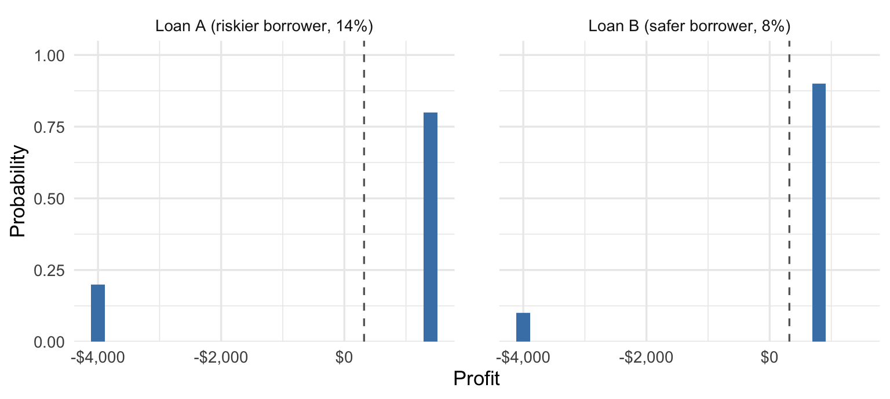
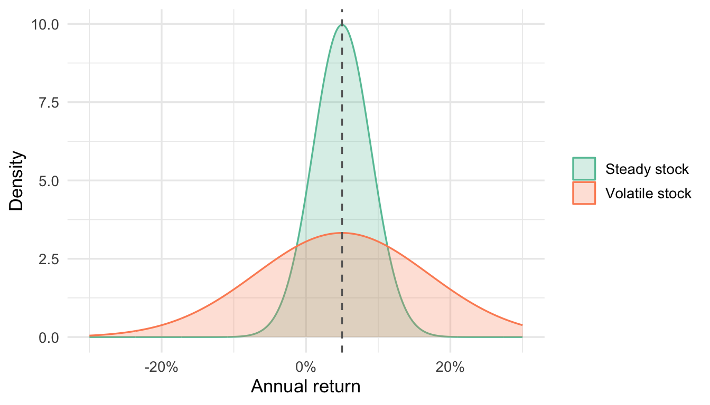
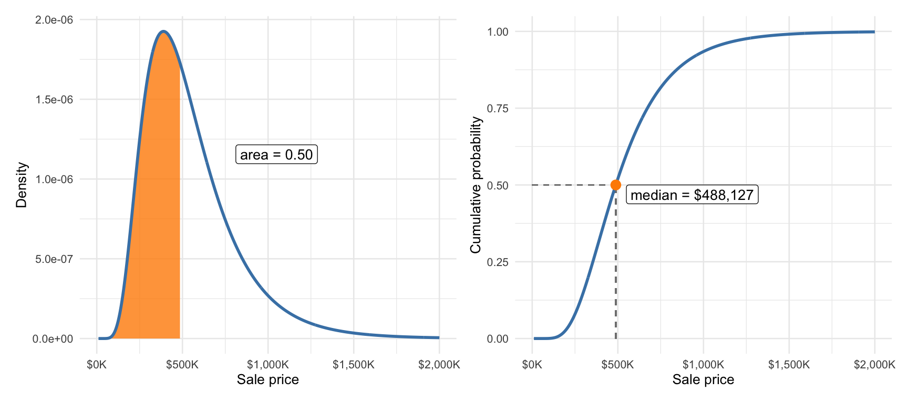
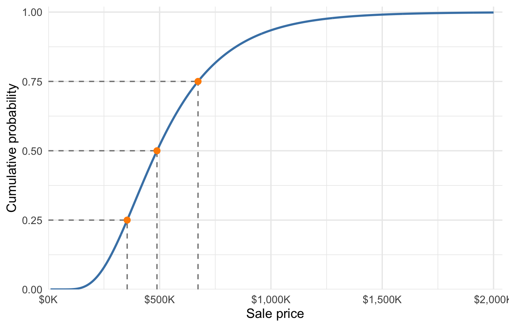

| Outcome | Probability | Probability × outcome |
|---|---|---|
| Repaid: $11,200 | 0.75 | $8,400 |
| Default: $6,000 | 0.25 | $1,500 |
| Expected value | $9,900 |
8 Measures of Location and Spread (and Other Parameters of Probability Distributions)
The introduction to this part defined a parameter as a feature of a probability distribution. The mean, median, standard deviation, and quantiles we computed on columns of data all have exact counterparts computed on probability distributions. The formulas look almost the same. The only real change is what gets averaged: instead of summing over observations we have, we sum over outcomes that could happen, each weighted by its probability.
8.1 The mean of a random variable
Definition 8.1: Mean (expected value) of a random variable
The mean of a random variable, also called its expected value, is a weighted average of its possible outcomes, with each outcome weighted by its probability. For a discrete random variable \(X\) with possible outcomes \(x_1, x_2, \dots, x_k\),
\[ E[X] = \Pr(X = x_1)\,x_1 + \dots + \Pr(X = x_k)\,x_k = \sum_{i=1}^{k} \Pr(X = x_i)\,x_i. \]
We often write \(\mu\) for it: \(E[X] = \mu\). The expected value is the long-run average outcome when the random process repeats many times.
Compare this to the sample mean we computed in Section 3.1, which adds up the observed values and gives each one weight \(1/n\). We can think of that as an expected value too, with respect to a probability distribution that puts probability \(1/n\) on each observed value. When the data contain ties — as for a binary variable like our default indicator — we can collapse the sample mean to a weighted average of the distinct observed values, which looks even more like the formula above.
As a simple first example consider the outcome of a single fair coin toss. Let \(H = 1\) if the coin lands heads and \(H = 0\) otherwise, so \(E[H] = 0.5 \times 1 + 0.5 \times 0 = 0.5\). At first blush this looks odd — the random variable only takes the values zero or one, so what does it mean to expect a value we can’t see? Well, imagine flipping that coin many times over, say 1,000 times. The average of your thousand 0s and 1s will land very close to 0.5. Flip the coin for long enough and the average outcome will get arbitrarily close to 0.5.
A slightly less abstract example: The default indicator \(D\) for a new small-business loan has \(E[D] = 0.75 \times 0 + 0.25 \times 1 = 0.25\) — the expected value of any 0/1 random variable is just the probability of a 1, the model version of the proportion-is-a-mean fact from Section 5.4. In the long run, we expect about 25% of small-business loans to fail under this model.
A similar calculation gives the expected payoff \(E[X]\) on the $10,000 loan at 12% interest:
The lender expects to collect $9,900 per loan, in the long-run-average sense: if we could fund many independent loans with this profile, the average payoff per loan will settle near $9,900. Whether that is good news depends on what the loan cost. Subtracting the $10,000 principal turns payoffs into profits — a gain of $1,200 if repaid, a loss of $4,000 if not — and the expected profit is the expected payoff minus the principal: $9,900 \(-\) $10,000 = -$100. At 12% interest, this loan loses $100 on average. A lender who funds 100 independent loans like it should expect to end up about $10,000 in the hole.
At 16% interest instead, the payoff when repaid becomes $11,600, the expected payoff rises to $10,200, and the expected profit is now a positive $200 per loan. How far an actual portfolio might stray from that expectation is a question we’ll answer precisely when we combine random variables later in the course. It would be a bad idea in the long run to write loans where we expect to lose money.
For one more example, let’s revisit the FedWatch target-range probabilities from Section 6.1 and Section 7.4. The probability distributions over target ranges after the July and September meetings are:
| Target range | Midpoint | Probability |
|---|---|---|
| 3.50–3.75% | 3.625% | 0.759 |
| 3.75–4.00% | 3.875% | 0.241 |
| Target range | Midpoint | Probability |
|---|---|---|
| 3.50–3.75% | 3.625% | 0.366 |
| 3.75–4.00% | 3.875% | 0.509 |
| 4.00–4.25% | 4.125% | 0.125 |
Weighting midpoints by probabilities gives an implied expected target-range midpoint of 3.685% after the July meeting and 3.815% after September.
WarningCommon mistake: An expected value need not be a possible outcome
The mean of a random variable is a probability-weighted average, and averages land between outcomes as often as on them. As with the coin toss above — \(E[H] = 0.5\) never occurs — the market-implied expected target-range midpoint of 3.685% is not the midpoint of any range the Fed can set: the target range moves in quarter-point steps, and 3.685% falls between two of the midpoints.
The expected increases over the current midpoint of 3.625% are 0.060 and 0.190 percentage points — about 6 and 19 basis points, in the units rate-watchers use (one basis point is a hundredth of a percentage point).
8.2 Variance and standard deviation
Like the sample variance computed with observed data, the variance of a random variable measures the average squared deviation from the mean. As with the mean, the average is weighted by each outcome’s probability.
Definition 8.2: Variance and standard deviation of a random variable
The variance of a random variable \(X\) with mean \(\mu\) is the probability-weighted average of squared deviations from the mean. For a discrete random variable with possible outcomes \(x_1, \dots, x_k\),
\[ \text{Var}(X) = \sum_{i=1}^{k} \Pr(X = x_i)\,(x_i - \mu)^2. \]
We write \(\sigma^2 = \text{Var}(X)\). The standard deviation is its square root, \(SD(X) = \sigma = \sqrt{\text{Var}(X)}\). Just like its sample counterpart, the standard deviation is in the same units as \(X\) and can be interpreted as a typical distance from the mean.
In words: the variance is the expected squared distance between the random variable and its mean — how wrong, on the squared-error scale, we expect to be if we predict \(X\) by \(\mu\). For the 16% loan, the payoff sits $1,400 above its mean of $10,200 when the loan is repaid and $4,200 below it on default, so
\[ \text{Var}(X) = 0.75 \times (1{,}400)^2 + 0.25 \times (-4{,}200)^2 = 5{,}880{,}000, \]
and taking the square root brings us back to dollars: \(SD(X)\) = $2,425. The standard deviation combines the two possible deviations — $1,400 when the loan is repaid and $4,200 when it defaults — into one probability-weighted measure of spread. The interpretation is the one we built for data in Section 3.2: a bigger standard deviation means a less predictable outcome.
Notation 8.1: Random variables, parameters, and statistics
- Capital letters name random variables (\(X\), \(Y\), \(D\)).
- Lowercase letters name particular values they might take (\(x\), \(y\)).
- Greek letters name parameters of a true probability or population distribution: \(\mu\) for its mean, \(\sigma^2\) for its variance, \(\sigma\) for its standard deviation.
- Lowercase Latin letters denote quantities computed from a single observed sample: \(\bar{x}\) for a sample mean, \(s^2\) and \(s\) for a sample variance and standard deviation. They are lowercase because they are already-observed numbers, not random.
- Uppercase Latin letters like \(\bar X\) denote a quantity computed on a random sample — in this case, the mean of that random sample. They’re random variables because they’re uncertain due to the random sampling. We’ll work with \(\bar X\) when we average random variables later in the course.
When you see a Greek letter, it refers to something unknown we’re trying to estimate. When you see a Latin letter, we have computed it (or could compute it) from data. Lowercase Latin letters (\(\bar{x}\), \(s\)) are numbers we computed from our observed sample; uppercase Latin letters like \(\bar{X}\) are random variables, because the samples they depend on are random.
8.2.1 Variance/Standard deviation measure unpredictability (risk)
As in Section 3.2, the spread of a probability distribution represents unpredictability or risk. The standard deviation is high when there is substantial probability placed on outcomes that are far from the expected value (the mean). Here are two hypothetical $10,000 loans with the same expected profit but different risk profiles. Both assume that the lender recovers $6,000 if the borrower defaults:
| Loan A (riskier borrower, 14%) | Loan B (safer borrower, 8%) | |
|---|---|---|
| Profit if repaid | $1,400 | $800 |
| Profit if default | -$4,000 | -$4,000 |
| Default probability | 0.20 | 0.10 |
| Expected profit | $320 | $320 |
| Standard deviation | $2,160 | $1,440 |

TipInterpretation: standard deviation as unpredictability (risk)
Loan A and Loan B have the same expected profit of $320, so expected value alone cannot choose between them. Their standard deviations can: $2,160 for Loan A against $1,440 for Loan B. Loan A places more probability on outcomes far from that shared average in both directions, which is what a lender means by calling it the riskier loan. Writing many loans like either one is profitable in the long run, provided defaults are close to independent — but a lender choosing between them gets one draw. At the same expected profit, a risk-averse lender takes Loan B.
Both loans’ long-run profitability rests on defaults being at least close to independent: one borrower’s failure tells us nothing about the others. We’ll define independence carefully later in the course.
The same comparison drives how investors think about other investments. Two stocks can have return distributions with the same expected return but very different standard deviations; Figure 8.2 shows such a pair.

You might be happy to hold the more volatile stock in your 401k if you’re young, but the less time you have left to let your portfolio grow, the less attractive this option becomes.
8.3 Quantiles and the IQR
Percentiles and quantiles carry over from data to distributions the same way. The \(p\)-th quantile of a distribution is the smallest value where the cumulative probability reaches or exceeds \(p\). For example: the median of a distribution is its 0.5 quantile: the smallest value where the cumulative probability reaches or exceeds 0.50. For our house price model, the median is $488,127:

Just as we discussed in Section 3.1, the median can be a more robust measure of center than the mean for a skewed probability distribution; in the model above, the mean price is $546,458, which is $58,331 above the median. The mean is pulled up by the long right tail of the distribution, just as it was in the observed data.
For a continuous distribution, we can read it off the CDF by finding where the curve crosses height \(p\). The median is the 0.5 quantile, and the interquartile range is the distance between the 0.25 and 0.75 quantiles, a spread measure in the units of the variable that ignores the tails entirely.

For the price model, the quartiles land at $354,282 and $672,536, so the IQR is $318,254: under this model, the middle half of future sales falls in a band about $318,254 wide. Quantiles also answer tail questions directly — a seller wondering “what price will I beat with probability 0.75?” wants the 0.25 quantile, not the mean.
8.4 Shifting and scaling
Linear transformations of random variables act just like linear transformations applied to columns in our datasets:
NoteMean, median, and standard deviation of \(aX + b\)
If \(X\) is a random variable with mean \(E[X] = \mu\) and standard deviation \(SD(X) = \sigma\), and \(a\) and \(b\) are known constants, then \(Y = aX + b\) has
\[ E[Y] = a\,\mu + b, \qquad \text{median}(Y) = a\,\text{median}(X) + b, \]
\[ SD(Y) = |a|\,\sigma, \qquad Var(Y) = a^2\,\sigma^2. \]
Adding \(b\) shifts the center and leaves the spread alone; multiplying by \(a\) scales both the center and the spread (and the spread doesn’t care about the sign of \(a\)).
These are exactly the same rules we encountered for the sample mean, median, and variance/SD in Section 4.1.
The profit on our 16% loan is \(X - 10{,}000\), so its mean is $10,200 \(-\) $10,000 = $200 and its standard deviation is exactly the payoff’s $2,424.87 — shifting can’t make an uncertain payoff any more or less predictable. Scaling Loan B’s $10,000 principal up to $100,000 sets \(a = 10\): expected profit rises to $3,200, and the standard deviation rises right along with it to $14,400.
We standardize a random variable by subtracting the mean and dividing by the standard deviation, producing a new random variable with mean 0 and standard deviation 1:
\[ Z = \frac{X - \mu}{\sigma}. \]
The new random variable \(Z\) measures how many standard deviations \(X\) sits from its own mean. A realized value of \(Z\) is a z-score and just like in Section 4.2 it measures the size of an observed difference relative to a typical difference, as measured by standard deviation.
8.5 Continuous random variables
The expected value, variance, and standard deviation are all interpreted the same way for a continuous random variable, but the formulas change from sums to integrals:
Technical detail 8.1: Mean and variance as integrals
If a continuous random variable \(X\) has probability density function \(f(x)\) then
\[ E[X] = \int x \, f(x) \, dx, \qquad \text{Var}(X) = \int (x - \mu)^2 \, f(x) \, dx, \]
and \(SD(X) = \sqrt{\text{Var}(X)}\) as always. The integrals play the role the sums played for discrete random variables: they average over every possible outcome, weighting by the density instead of by individual probabilities. The mean and variance of the Austin price model come from integrals of exactly this kind, and software evaluates them.
The mean is still the long-run average, and the standard deviation still measures how far outcomes typically stray from it. The Austin price model’s standard deviation is the square root of its variance, while its median and quartiles come from the CDF.